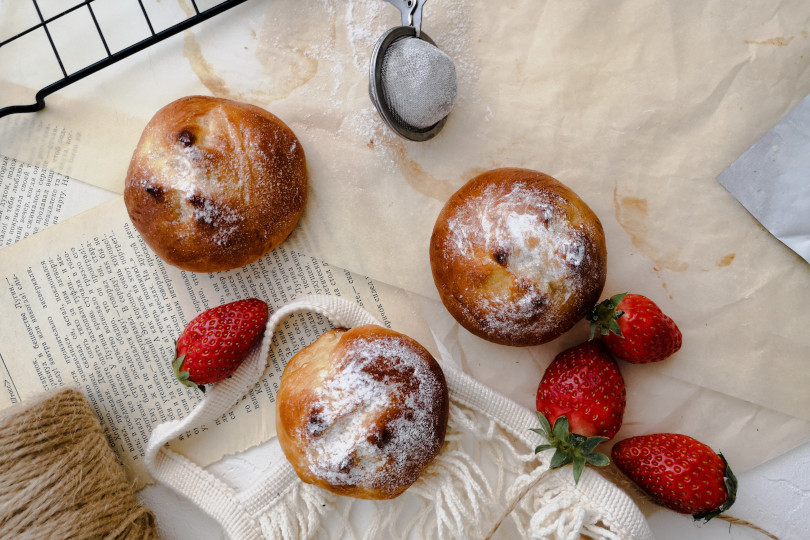

Search by


close recipe
Vegan Brioche
Brioche is a delicious sweet bread made that you can eat for breakfast or even as a snack. This recioe of brioche will assist you in making it vegan
Ingredients
- 150gr Manitoba flour
- 3100gr Flour
- 60gr Sugar
- 125ml Water
- 30ml Oil
- 1/2 sppon dry yeast
- 1 spoon salt
Let's start Cooking!
Make the dough by mixing 50gr of flour + 45ml water + the yeast. Mix thouroughly and once the dough is ready let it raise till triple in volume
Add sugar, the remaning flour and water. Mix. Now you can add the oil and salt and work the dough
Let the dough rise for at least 4 hours
Shape the dough in small balls or a shape you like. Each pieace should be of 50gr and let them rise till double in size
Bake the brioche doughs in an oven at 180℃ for 15 minutes